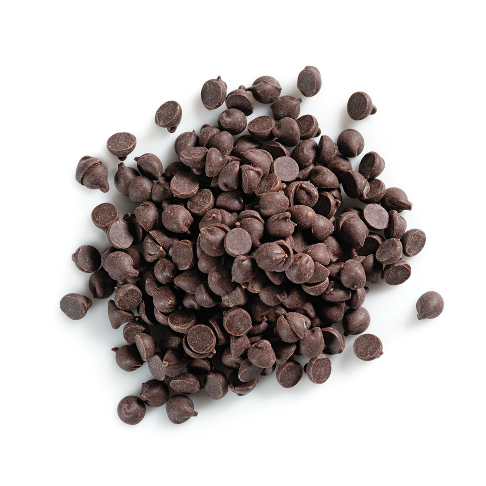

BA’s Best Chocolate Chip Cookies
By Chris Morocco
Description
Food director Chris Morocco spent months (truly) developing this chocolate chip cookie recipe—he made nearly 30 batches, plus 10 more in the cross-testing phase—to ensure they were the absolute best. What makes this recipe deliver on that promise? Crispy edges, a buttery chew, and plenty of chocolate chunks in every bite—all without a stand mixer.
Contains Egg
20 Minutes
40 Minutes
Ingredients
-
1½ cup all-purpose flour
-
¾ tsp. kosher salt
-
¾ tsp. baking soda
-

¾ cup unsalted butter
-
1 cup dark brown sugar
-
¼ cup granulated sugar
-
1 large egg
-
2 tsp. vanilla extract
-

6oz. chocolate chips
Instructions
Step 1
Preheat oven to 375° and place racks in upper and lower thirds of oven. Whisk all-purpose flour, kosher salt, and baking soda in a small bowl; set flour mixture aside.
Step 2
Cook one stick of unsalted butter in a large saucepan over medium heat, swirling often and scraping bottom of pan with a heatproof rubber spatula, until butter foams, then browns, about 4 minutes. Scrape melted butter and any brown bits to a large heatproof mixing bowl and let cool 1 minute. Cut remaining ½ stick of unsalted butter into small pieces and add to brown butter (it should start to melt but not foam and sizzle, so test with one piece before adding the rest).
Step 3
Once butter is melted, add packed dark brown sugar and granulated sugar and whisk, breaking up any clumps, until sugar is incorporated and no lumps remain. Add 1 large egg and whisk until sugar dissolves and mixture is smooth, about 30 seconds. Whisk in vanilla extract. Using rubber spatula, fold reserved dry ingredients into butter mixture just until no dry spots remain, then fold in bittersweet chocolate (the cookie dough will be soft but should hold its shape once scooped; if it slumps or oozes after being scooped, stir dough back together several times and rest 5–10 minutes until scoops hold their shape as the flour hydrates).
Step 4
Using a 1½-oz. scoop (3 Tbsp.), portion out 15 balls of dough and divide between 2 parchment-paper-lined rimmed baking sheets. Bake cookies, rotating sheets if cookies are browning very unevenly (otherwise, just leave them alone), until deep golden brown and firm around the edges, 8–10 minutes. Let cool on baking sheets.
Notes
Dough balls can be portioned 3 months ahead; freeze on cookie sheets and then transfer to a resealable plastic bag. Bake from frozen, adding 1–2 minutes on to the cook time. Cookies can be baked 3 days ahead. Store in an airtight container at room temperature.